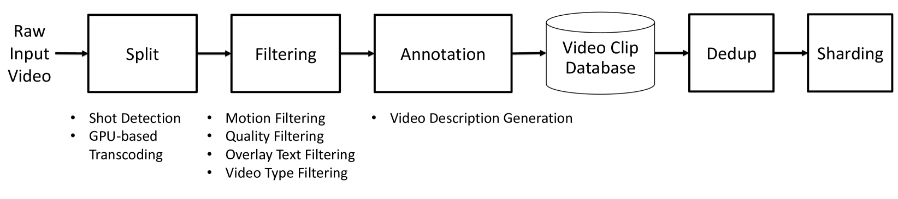

World Foundation ModelVideo DiffusionAutoregressiveVideo TokenizerPhysical AI
제출: 2025년 1월 7일 (v1) → 2025년 7월 9일 (v3) · 훈련 자원 10,000× H100 3개월
한 줄 요약 (TL;DR)
Physical AI가 안전하게 상호작용할 수 있는 "세계의 디지털 트윈"을 만들기 위해 NVIDIA가 오픈 소스로 공개한 World Foundation Model 플랫폼. 원본 2,000만 시간의 영상 → 1억 클립으로 정제하는 curation 파이프라인, 통합 이미지·영상 Cosmos Tokenizer(연속/이산, 8×8×8·8×16×16 압축), 그리고 두 계열(diffusion 7B/14B, autoregressive 4B/12B)의 pre-trained WFM과 카메라 제어·로보틱스·자율주행 post-training 예제까지 permissive 라이선스로 공개. 데이터·모델·평가·가드레일을 한 스택으로 제공한다.
1배경 · 문제의식
이미지·언어 모델은 인터넷 규모의 데이터로 급성장했지만, Physical AI는 데이터가 "관측–행동" 시퀀스를 요구하고, 행동이 실세계를 교란하며 시스템·환경 손상을 야기할 수 있어 스케일이 어렵다. 저자들은 World Foundation Model(WFM) — 실세계를 대체할 수 있는 예측 가능한 디지털 트윈 — 을 이 문제의 근본 해법으로 본다. 다만 개별 팀이 WFM을 처음부터 만들기엔 데이터·컴퓨트 부담이 크므로, NVIDIA는 pre-trained 백본을 공개하고 각 팀이 도메인에 post-train하는 개방형 플랫폼을 목표한다.
2핵심 Contribution
Video curation 파이프라인 — 원본 2,000만 시간 → 약 1억 클립(2~60초). shot 분할·트랜스코딩·모션/품질/텍스트 필터링·VLM 캡셔닝·중복 제거(~30%)·shard까지 완전한 스택. FP8로 VLM 추론 10× 가속.
Cosmos Tokenizer — 통합 image/video 토크나이저. 연속(16D 임베딩)·이산(FSQ, vocab 64K) 두 종. 압축율 8×8·16×16(image), 4×8×8·8×8×8·8×16×16(video). 기존 대비 DAVIS PSNR +4dB, 12× 빠름.
두 계열의 사전학습 WFM — Diffusion 7B/14B(Text2World → Video2World) + Autoregressive 4B/12B → 5B/13B Video2World. 오픈 웨이트, permissive 라이선스.
Post-training 레시피 — 카메라 제어(pose 조건), 로봇 조작(action-conditioned), 자율주행 등 downstream 도메인 커스터마이징 예시. Physical AI 팀은 백본을 파인튜닝만 하면 됨.
원본 2,000만 시간의 영상 → 최종 학습셋 약 1억 클립(길이 2~60초). 파이프라인 단계는 shot 분할, 트랜스코딩, motion/quality/text 필터, VLM 캡셔닝, 중복 제거(약 30% 제거), shard 생성. VLM 추론을 FP8 양자화로 10× 가속. 도메인 구성비는 driving 11%, manipulation 16%, human motion 10%, navigation 16%, first-person 8%, nature 20%, camera motion 8%, synthetic 4%.
Cosmos Tokenizer
이미지·영상 통합 토크나이저. 두 계열: Cosmos-Tokenize1-CV(연속, diffusion용) — 임베딩 16D, 8×8×8 압축; Cosmos-Tokenize1-DV(이산, AR용) — FSQ vocab 64K, 8×16×16 압축. DAVIS 벤치에서 이전 SOTA 대비 PSNR +4dB, 재구성 품질을 유지하면서도 12× 빠른 처리.
Diffusion WFM (연속 토큰)
Cosmos-Predict1-7B/14B Text2World → Video2World 계열. 텍스트나 초기 프레임 조건에서 미래 영상을 생성. 조건화 방식으로 카메라 pose(6D), 로봇 action, driving trajectory 등을 삽입 가능. AdaLN 기반 timestep·conditioning 결합.
Autoregressive WFM (이산 토큰)
Cosmos-Predict1-4B/12B (Video2World fine-tune: 5B/13B). 이산 토큰 시퀀스에 대해 next-token prediction. Diffusion 대비 지연이 낮고 스트리밍 친화적이나, 시각 품질은 diffusion이 우세.
Figure 2 — Cosmos WFM 플랫폼 개요. 데이터 curation(2,000만 시간 → 1억 클립) → 토크나이저 → 두 계열의 pre-trained WFM(diffusion/AR) → post-training(카메라/로봇/주행) → 안전·평가까지 End-to-End 스택을 한 그림에 담음. (출처: arXiv:2501.03575)

Figure 5 — Cosmos Tokenizer. 이미지·영상 통합 encoder/decoder 구조. CV(연속, 16D) · DV(이산, FSQ vocab 64K) 두 변종을 지원하며 동일 압축율에서 DAVIS PSNR +4dB, 12× 속도 우위. (출처: arXiv:2501.03575)
핵심 메시지 — Physical AI가 스케일업하려면 데이터·토크나이저·백본·post-training·안전을 하나의 개방형 스택으로 제공해야 한다. Cosmos는 그 첫 사례를 목표한다.